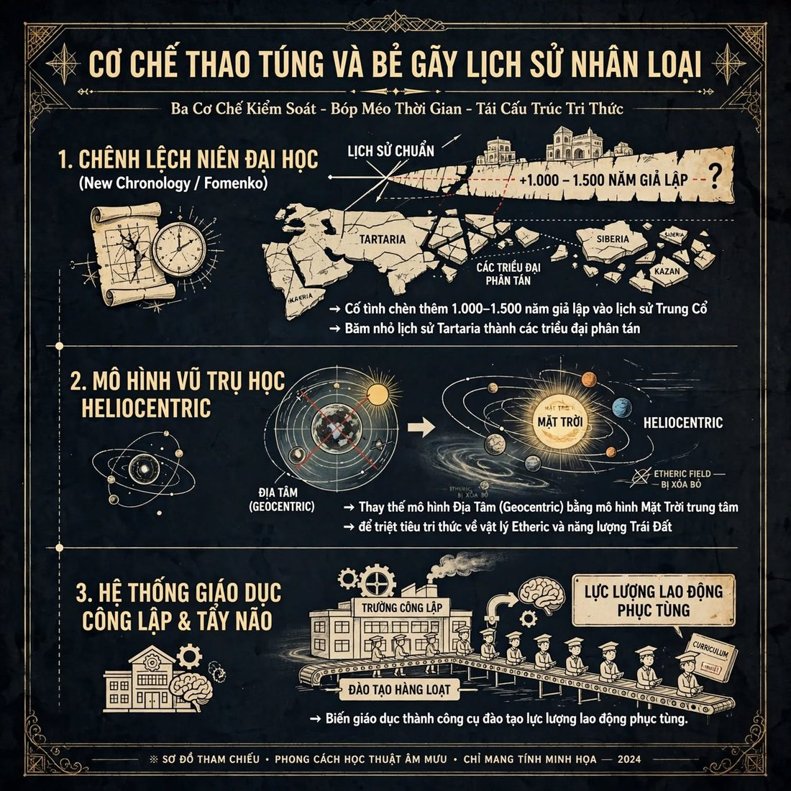
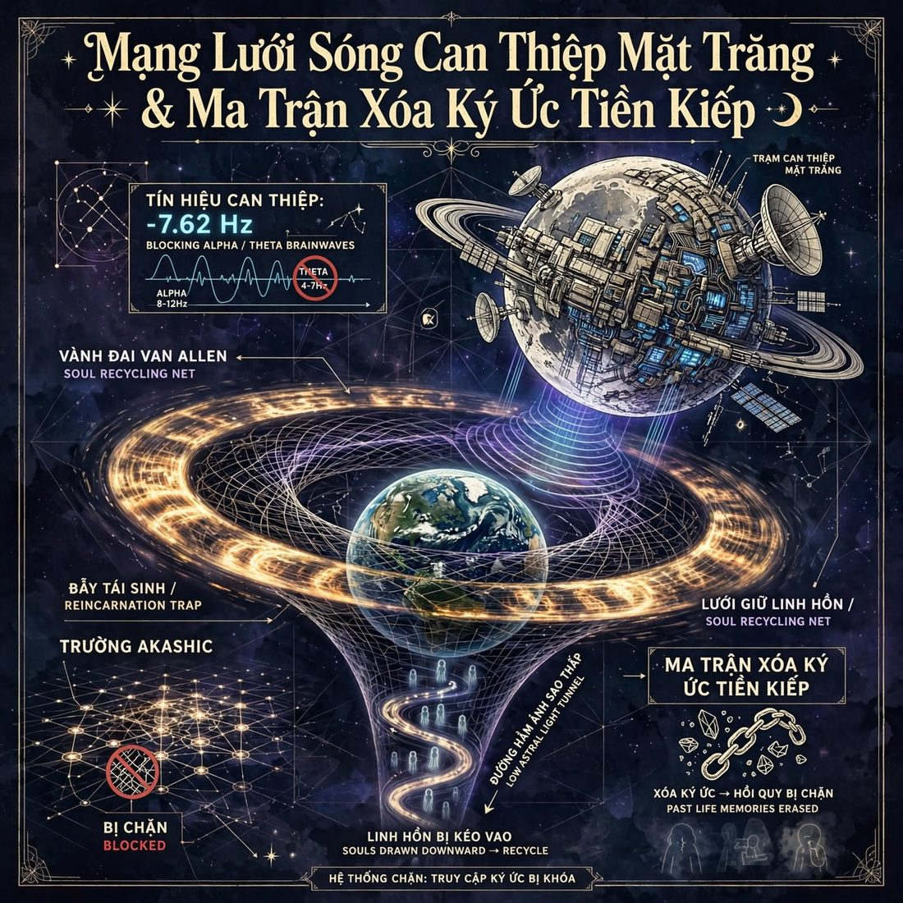
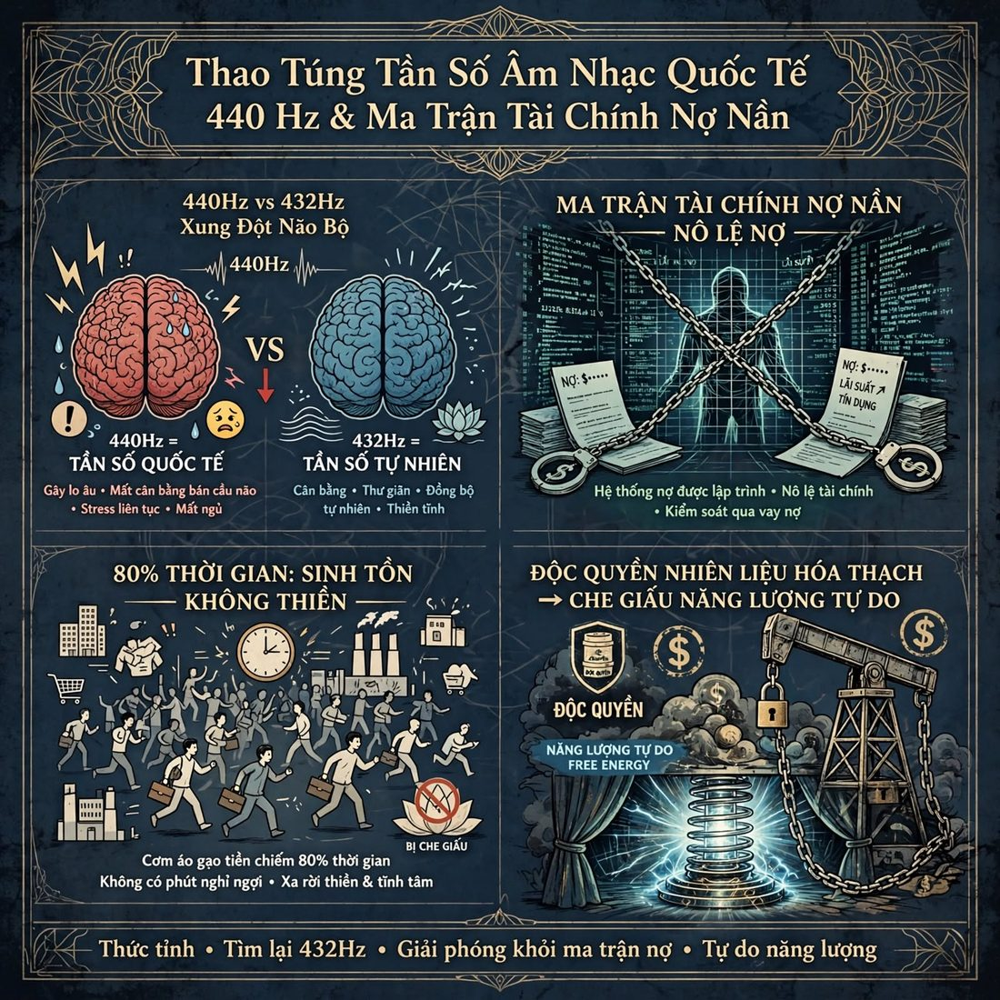
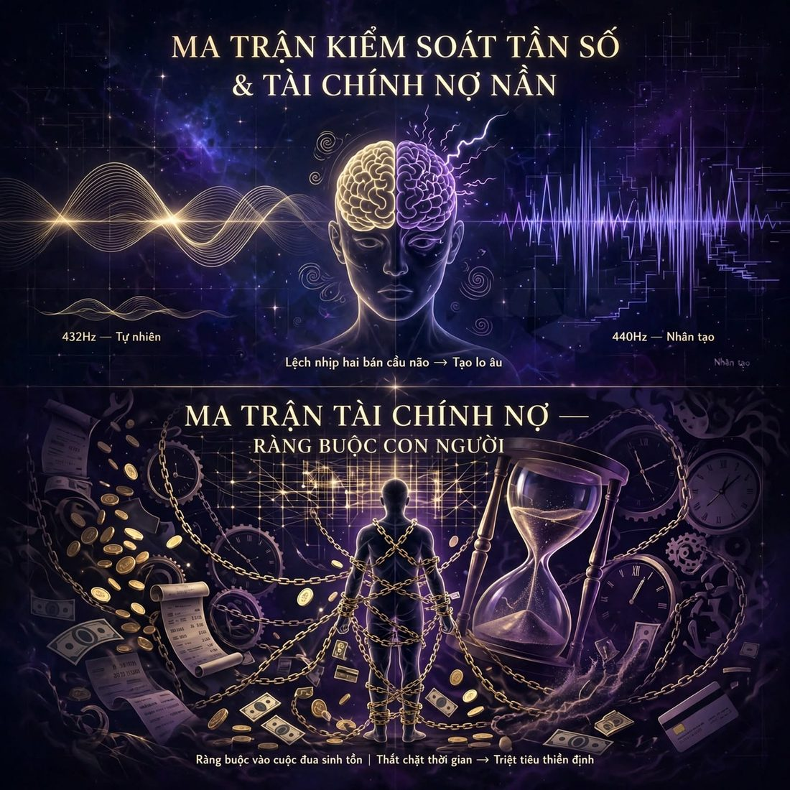
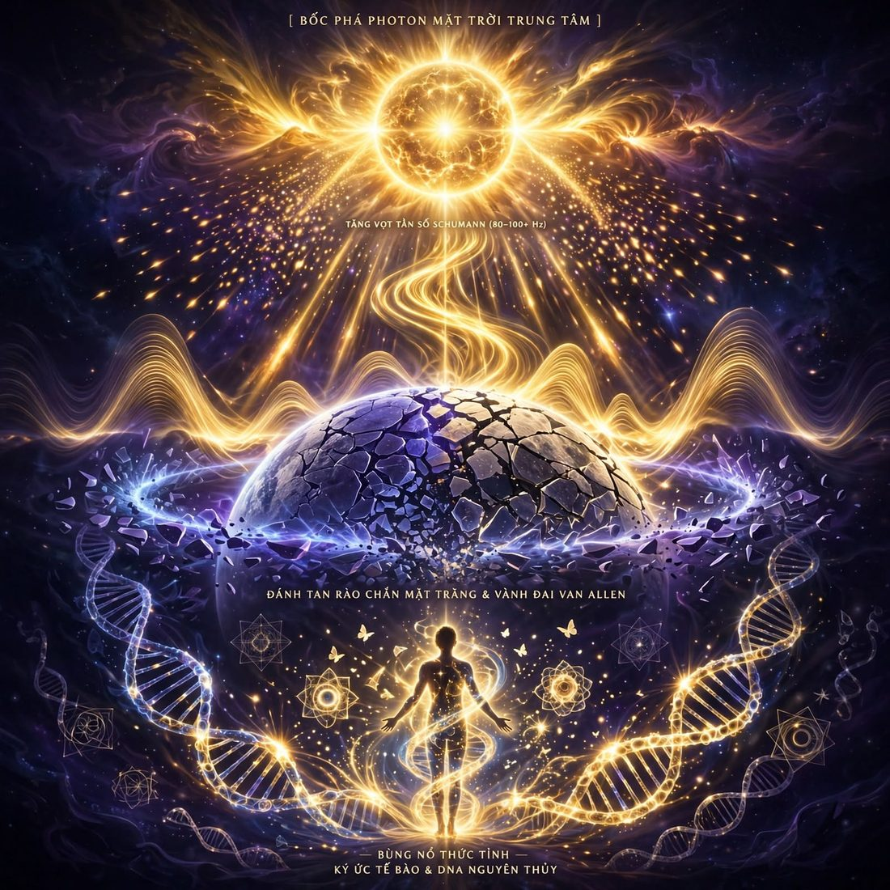
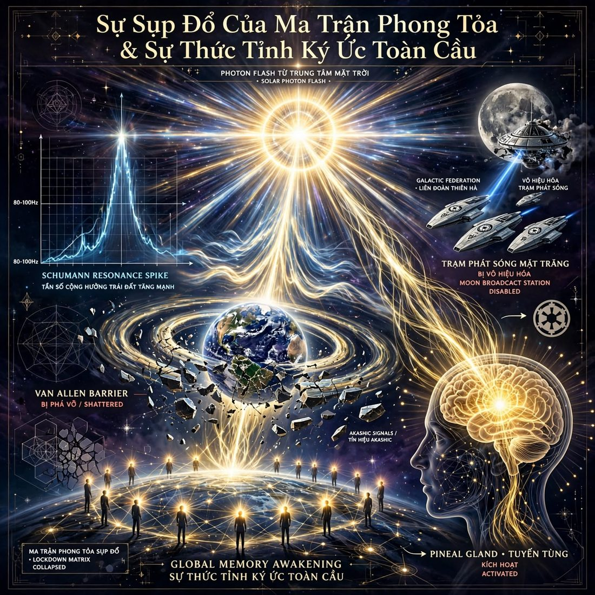
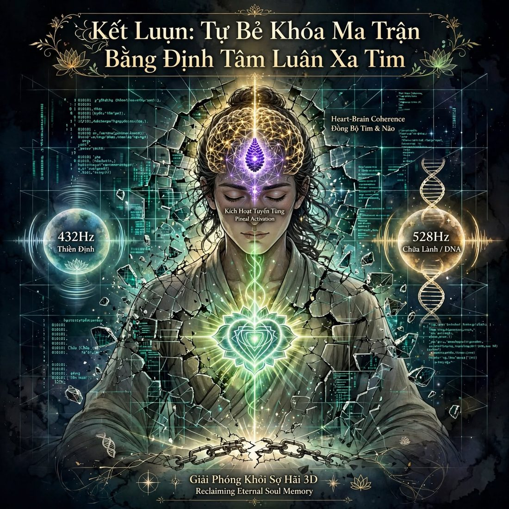

Trang chủ / Chuyên đề 10: Lịch Sử Bị Che Giấu & Nền Văn Minh Cổ Đại / Kỳ 99
Chuyên đề 10 · Kỳ 99 / 100
SỰ THAO TÚNG LỊCH SỬ CỦA NWO & MA TRẬN XÓA KÝ ỨC TIỀN KIẾP

1. Cơ Chế Bẻ Gãy Niên Đại Học Và Sự Giả Lập Lịch Sử NWO

Khi nhìn lại toàn bộ bức tranh lịch sử Trái Đất — từ sự sụp đổ của Atlantis, Lemuria cho đến sự bôi xóa đế chế Great Tartaria — một câu hỏi nhức nhối đặt ra: Làm thế nào mà một nhân loại từng sở hữu công nghệ lượng tử, năng lượng miễn phí và tuổi thọ hàng ngàn năm lại bị biến thành những nô lệ 3D hoàn toàn quên mất cội nguồn? Câu trả lời nằm ở Chiến Dịch Thao Túng Lịch Sử Và Bẻ Gãy Niên Đại Học (Chronological Manipulation Campaign) được triển khai bởi lực lượng kiểm soát New World Order (NWO).
- Tạo ra lịch sử giả lập (New Chronology): Các công trình nghiên cứu toán học lịch sử của Anatoly Fomenko chỉ ra rằng hàng ngàn năm lịch sử Trung Cổ Châu Âu thực chất bị hư cấu hoặc lặp lại từ các sự kiện lịch sử Tartaria và Ai Cập. Giới cầm quyền đã cố tình "chèn thêm" hơn 1.000 năm vào niên lịch để làm phức tạp hóa và cắt đứt liên kết của con người với quá khứ gần.
- Thay mô hình vũ trụ học: Để ngăn con người khai thác năng lượng miễn phí từ trường Aether, phe NWO đã thay thế mô hình Địa Tâm (Geocentric) bằng mô hình Mặt Trời trung tâm (Heliocentric), triệt tiêu tri thức về vật lý Etheric và năng lượng Trái Đất.
- Hệ thống giáo dục công lập & tẩy não: Hệ thống giáo dục bị biến thành công cụ đào tạo lực lượng lao động phục tùng.
2. Sóng Can Thiệp Mặt Trăng & Ma Trận Xóa Ký Ức Tiền Kiếp

Không chỉ dừng lại ở việc bóp méo sách vở lịch sử, phe kiểm soát bóng tối còn vận hành một Hệ Thống Phong Tỏa Năng Lượng Tâm Thức Chiều Dọc nhằm ngăn không cho các linh hồn khôi phục ký ức kiếp sống.
- Máy phát sóng tần số âm Mặt Trăng: Trạm vũ trụ Mặt Trăng cổ đại phát ra dải sóng can thiệp (-7,62 Hz) liên tục 24/7. Dải sóng này tạo ra một "Bức Tường Tần Số" ngăn chặn Tuyến Tùng giải mã các tín hiệu sóng vô hướng từ trường Akashic (dập tắt sóng não Alpha/Theta, khóa nhận thức trong dải Beta).
- Bẫy tái sinh mới (Soul Recycling Net): Khi một linh hồn rời bỏ thể xác 3D, màng phong tỏa Van Allen tạo ra dải ánh sáng giả lập (Low Astral Light Tunnel) thu hút linh hồn đi vào tiến trình "tẩy rửa ký ức" trước khi cưỡng chế tái sinh trở lại thể xác 3D. Điều này khiến mỗi con người sinh ra đều bắt đầu từ con số 0, hoàn toàn mất đi ký ức về di sản thiên hà của mình.
3. Thao Túng Tần Số Âm Nhạc 440 Hz & Ma Trận Tài Chính Nợ Nần


Để giữ cho trường năng lượng con người luôn ở dải tần số thấp, phe NWO đã áp đặt các ma trận kiểm soát sinh hoạt hằng ngày:
- Chuẩn âm nhạc 440 Hz: Việc ép buộc toàn thế giới dùng chuẩn âm nhạc 440 Hz từ giữa thế kỷ 20 thay cho tần số tự nhiên 432 Hz là một chiến dịch tâm lý chiến vi mô. Âm nhạc 440 Hz làm méo mó cấu trúc tinh thể nước trong tế bào, giữ sóng não luôn ở trạng thái Beta căng thẳng, gây lệch nhịp hai bán cầu não và tạo lo âu.
- Nô dịch bằng ma trận tài chính: Bằng cách giấu kín công nghệ năng lượng miễn phí và độc quyền nguồn cung tiền tệ, phe NWO ép buộc hàng tỷ người phải dành 80% thời gian sống chỉ để đổi lấy nhu cầu sinh tồn cơ bản. Sự bận rộn mãn tính này ngăn không cho con người có thời gian thiền định, quay vào bên trong để kích hoạt Tuyến Tùng.
4. Sự Sụp Đổ Của Ma Trận Phong Tỏa & Thức Tỉnh Ký Ức Toàn Cầu


Mặc dù ma trận phong tỏa NWO được xây dựng rất kiên cố, nó đang tự sụp đổ hoàn toàn trong giai đoạn hiện tại. Bốc phá photon Mặt Trời Trung Tâm dội xuống làm tăng vọt tần số Schumann (80-100+ Hz), đánh tan rào chắn Mặt Trăng và vành đai Van Allen, làm bùng nổ thức tỉnh ký ức tế bào và DNA nguyên thủy.
- Trạm phát sóng Mặt Trăng bị vô hiệu hóa: Lực lượng Liên Đoàn Thế Giới Thiên Hà (GFW) đã giải phóng Mặt Trăng, vô hiệu hóa các thiết bị phát sóng can thiệp tiêu cực.
- Sự bùng nổ tần số Schumann: Nhịp đập Trái Đất liên tục bùng nổ dải tần 40 Hz, 80 Hz+, đánh tan rào chắn phong tỏa Van Allen, mở lại đường truyền tín hiệu từ trường Akashic trực tiếp về Tuyến Tùng con người.
5. Kết Luận: Tự Bẻ Khóa Ma Trận Bằng Định Tâm Luân Xa Tim

Chiến dịch thao túng lịch sử và xóa ký ức của NWO chỉ có hiệu lực khi con người sống trong sự vô minh và sợ hãi. Khi bạn nhận thức được các cơ chế phong tỏa này, bạn chủ động rút năng lượng khỏi các kịch bản hoảng loạn của truyền thông 3D; thay đổi chuẩn âm nhạc sang 432 Hz / 528 Hz, thực hành thiền định đồng bộ Trái Tim - Bán Cầu Não; và kích hoạt ngọn đăng chủ quyền bản thể, tự tay bẻ khóa ma trận từ bên trong tâm trí để khôi phục lại ký ức vĩnh hằng của Linh hồn.